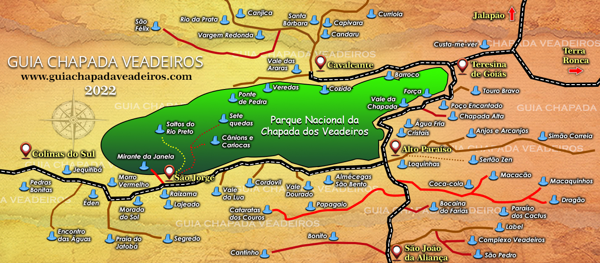

Parque Nacional da Chapada dos Veadeiros - Saltos do Rio Preto
A trilha saltos do rio Preto fica localizada dentro do Parque Nacional da Chapada dos Veadeiros sendo a principal e mais visitada. Fica a uma distância aproximada de 35 km saindo da cidade de Alto Paraíso do Goiás, localizada no vilarejo de São Jorge. Certamente é um dos destinos que merece visitação. O passeio possui 4 principais atrativos que são: salto de 120 metros (apenas para fotos), salto de 80 metros (cachoeira do Garimpão), cachoeira do Carrossel e a finalmente Corredeiras.
Uma trilha imperdível contudo pesada
O percurso é bem longo com distância média total, ida e volta, de 13km. São muitos declives e aclives, o que torna o percurso difícil. Contudo uma incrível jornada em meio ao cerrado com muita vegetação e animais silvestres. No caminho pode-se observar áreas de antigo garimpo de cristal da região que são pequenas minas desativadas.Primeira parada: saltos de 120 metros
O primeiro atrativo da trilha é marcado pelo Mirante dos Saltos que surpreende com uma paisagem de tirar o fôlego e receber as bênçãos do lugar. Dali poderá observar a majestosa paisagem do salto de 120 metros e de todo o vale de área intangível formado ao redor da grande queda. Inegavelmente um dos cenários mais lindos da Chapada dos Veadeiros. O salto de 120 metros só é possível ser visto de cima. Não há trilhas para chegar ao poço.Segunda parada: saltos de 80 metros ou cachoeira do Garimpão
Caminhando um pouco mais a frente, cerca de 800 metros, chegaremos a salto de 80 metros conhecido como cachoeira do Garimpão. Cercado por uma enorme piscina natural e pequenas corredeiras, esse é o primeiro ponto de parada para banhar-se, com muito sol e também sombra. Neste local é formado uma das maiores piscinas naturais da região.Terceira parada: cachoeira do carrossel
O atrativo do carrossel foi aberto recentemente em 2019. A trilha foi feita em grande parte por decks de madeira resistentes à chuva e sol. O caminho impressiona por sua grandiosidade que beira o grande cânion do rio preto. Um lindo deck de madeira é o cartão postal do lugar, que tem uma visão panorâmica do cerrado com a cachoeira do Carrossel ao fundo. A queda é menor que as anteriores, porém com um grande poço para banho. Não é permitido visitação durante o período de chuva (novembro a abril), somente na seca (maio a outubro).Última parada: corredeiras
Um caminhada por um terreno mais plano, em torno de 1 km para chegar até o último atrativo: as corredeiras. A incrível jornada termina em uma área de relaxamento e lazer, podendo descansar e desfrutar desse incrível lugar. Com hidromassagem natural e várias pequenas quedas d'água em meio a natureza virgem para encerrarmos esse passeio pelo Parque Nacional da Chapada dos Veadeiros. Para voltar, ainda há em torno de 3km de caminhada com subida leve a cansativa.Photo gallery
Interactive map
Tap or click areas on the map over the catalogued attractions for more information.
